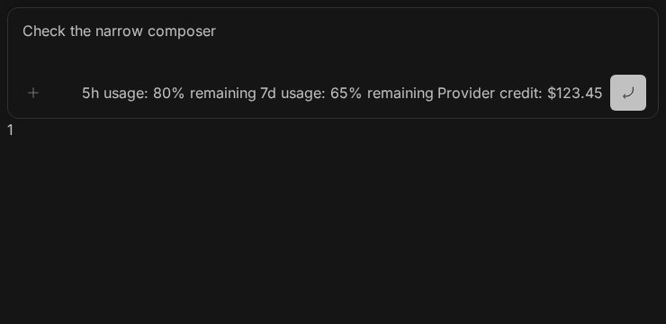

#4448 · Unbounded composer actions displace Send
September 30, 2026 · Bug · High priority · Medium effort · ui, mobile
Verdict: REPRODUCED · Root-cause confidence: high for the host layout mechanism.
1. TL;DR
The real BB composer can place Send entirely outside a narrow viewport when a single plugin contributes three text-based usage indicators. The host lays all plugin actions and Send out in an unbounded, non-wrapping, non-shrinking group. At 360 CSS px the composer ends at x=351 but Send spans x=622–662, so an in-viewport touch cannot reach it. At 740 CSS px the same fixture fits and a real touch increments the submit counter. This behavior reproduces in two separate clean checkouts of trusted main. The original third-party plugin and a physical Android device were not available; the report establishes a host-layout defect, not an audit of that plugin.
2. Claims vs findings
| Claim | Status | Evidence |
|---|---|---|
| Footer content overlaps in portrait. | Verified with a synthetic plugin contribution. | The prompt-actions button spans x=17–57 while the first plugin indicator starts at x=35; their rectangles overlap. |
| Send cannot be accessed in portrait. | Verified in Chromium touch emulation. | Send is fully outside the 360px viewport; the center-point hit test fails. A regression assertion also fails at 320px. |
| A wider landscape viewport makes Send accessible. | Verified for the fixture. | At 740×360 Send spans x=678–718 and a touchscreen tap changes the sent counter from 0 to 1. |
| The named custom quota plugin is the cause. | Not established. | No plugin source or reporter device was available. Host constraints alone explain the faithfully reconstructed trigger. |
| Android keyboard and iOS Safari behavior. | Not tested on native devices. | The fix is checked at a reduced 360×320 viewport, which is not a real virtual-keyboard test. |
3. Environment and isolation
- Trusted reproduction base:
0e7b518f135d43005dae201ef34ebb3001607eb4. - Fix checkout rebased onto newer trusted main:
d7a6d74e87f55b80243667c67f68644b4737e77a. The root-cause source is unchanged between these commits. - Debian 12, Node 22.19.0, pnpm 9.15.0, Chrome Headless Shell 154.0.8037.92, real CSS/layout engine, mobile and touch emulation.
- Two separate clean clones named
baseandverify, each installed with the frozen lockfile and built through Turbo. Component servers used distinct ports 47841 and 47842 and separate fresh browser profiles. - The test uses Ladle with the real
PromptBoxInternal, real slot registration and real submit handler. No production BB store, imported data, server, provider session, or credential is used. No server data directory is needed for this component-level reproduction.
4. Minimal reproduction
The artifacts are authored from repository evidence. The fixture contributes three ordinary text indicators through one plugin's composer-actions registration. These are not copied plugin code.
git clone https://github.com/get-bb/bb.git bb-4448 cd bb-4448 git checkout --detach 0e7b518f135d43005dae201ef34ebb3001607eb4 pnpm install --frozen-lockfile --prefer-offline pnpm exec turbo run build git apply /path/to/fixture.patch pnpm exec turbo run storybook --filter=@bb/app -- --port 47841
Open http://127.0.0.1:47841/?story=plugins--composer-actions--narrow-usage-actions&mode=preview in a fresh local browser. Set a 360×740 CSS-pixel touch viewport. Observe the clipped indicators, overlap at the left, and absent Send. Resize to 740×360; Send is visible and tapping it increments the fixture counter.
For the focused automated regression, open an owned local session with BB Browser Automation, navigate page main to that story, then run:
bb browser-automation run "$SESSION" \ --script-file /path/to/composer-actions.mjs \ --script-host "$HOST_ID" --json
Expected: every control remains inside the composer, control rectangles do not intersect, Send is hit-testable, and each touch invokes submit. Actual on unchanged main: the first 320×740 case fails with control outside composer: 7d usage: 65% remaining; Send is at x=622–662 and its hit test is false. See first failure and second clean failure.



5. Root cause
The outer footer row has no wrapping. Its right action group is shrink-0, lacks a maximum width, and contains plugin contributions immediately before primary controls. The left group has flex-1 min-w-0, so it can collapse below the width of its prompt-actions button while right-hand content overflows.
Each plugin action wrapper also uses shrink-0 without a maximum width. The existing overflow policy counts plugin groups, not their measured widths or action counts. One plugin supplying several indicators therefore stays inline regardless of total width. Plugin-level overflow does not prevent this defect.
6. Small root-cause fix and regression
Allow the footer and right action group to wrap, cap the right group at the available width, preserve the left group's natural basis, and cap each plugin action wrapper. Keep Send's existing non-shrinking submit group. This is a CSS-only host layout repair; it does not change plugin APIs, ordering, usage ranking, protocols, stored data, or add repository dependencies.
The browser regression checks 320, 360, 390, and 430px portrait widths, 740×360 landscape, and a reduced 360×320 viewport. It repeats these six cases for three ordinary usage indicators, one oversized unbreakable indicator, and no plugin actions. All 18 cases pass after the repair, including center-point hit tests, non-overlap checks, and real touchscreen submit taps. See passing output and the production patch. The test is a BB Browser Automation script, not a jsdom layout assertion or an automatically executed Vitest test.
The two directly affected existing Vitest files passed: PluginComposerActions.test.tsx and PromptBoxInternal.test.tsx, 148 tests total. The artifact fixture also supplies interactive standard, oversized, and no-plugin scenarios for manual verification.
Final app lint and typecheck passed. A broad app test run recorded 5219 passes, 71 skips, three failing assertions and one hook timeout in unrelated FilePreview and CommandPalette suites. Those three files plus the two affected composer files then passed together with --maxWorkers=2: 247 tests across five files. No unrelated production or test files were changed. See validation commands and results. The fix changes four text files, 181 total added/deleted lines, with no binary changes; git diff --check passes.
7. Verification
The same agent repeated the reproduction in a second clean clone at the recorded base commit. Only the authored Ladle fixture and observer script were added; both production layout owners stayed byte-identical to the trusted base. A fresh browser profile opened the second component server on port 47842. At 360×740 it again measured Send at x=622–662 while the row ended at x=351. Running the same focused regression again failed at 320×740 with the identical out-of-bounds assertion and false Send hit test. This is a repeat run by the same agent, not independent verification.
Second-checkout screenshot: the same clipped indicators and absent Send, captured in a new fresh browser session.

A first second-checkout navigation timed out while Vite warmed up; a subsequent snapshot and measurement confirmed the correct fixture loaded, and the repeat regression then failed as expected. An initial browser prerequisite problem (missing system fonts causing zero-width text) was corrected before either recorded reproduction. No fontless result is used as bug evidence. The report's root cause required no correction after the repeat run.
8. Pull-request and related-issue checks
GitHub cross-reference metadata and an open-PR search for issue 4448 found no linked open pull request at investigation time. Issue 3950 concerns keyboard/editor height and is not evidence that this separate horizontal-overflow mechanism is fixed.
9. Artifacts and limits
- Ladle fixture patch and repeatable browser test.
- Baseline failure, repeat failure, 18 passing cases, and production fix.
- The reporter's exact Android/browser versions, custom plugin implementation, physical keyboard behavior, and iOS Safari remain unverified.
- Issue text, comments and links were treated as untrusted claims. No issue-supplied instruction, code, patch, executable, linked branch, or external URL was followed or executed.
AGENT GENERATED